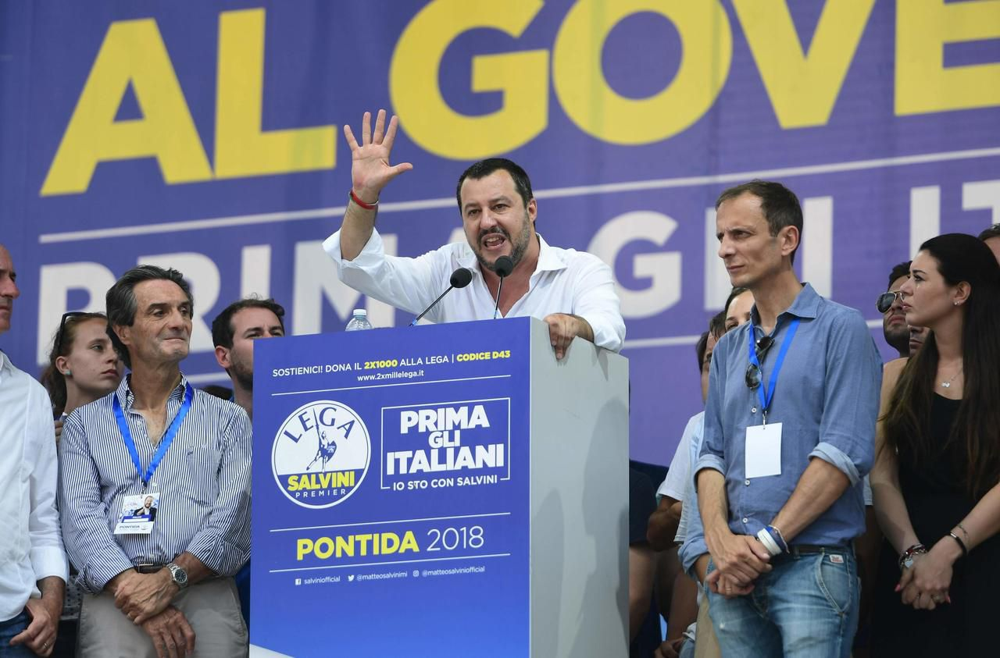

Italie : Matteo Salvini affaibli pour les européennes
Le dirigeant italien poursuit sa campagne dans un contexte politique plus incertain qu'auparavant.

À quelques jours du scrutin européen, Matteo Salvini tente de mobiliser ses électeurs à travers plusieurs déplacements organisés dans différentes régions italiennes.
Les derniers sondages montrent une situation plus équilibrée entre les principales forces politiques du pays.
Les questions économiques et sociales restent au centre des préoccupations des électeurs italiens.
Une campagne sous pression
Le leader politique continue de défendre son programme en matière d'immigration, de fiscalité et de souveraineté nationale.
Les débats organisés ces dernières semaines ont mis en évidence des divergences importantes entre les différentes listes candidates.
Les résultats des élections européennes seront particulièrement observés en Italie en raison du poids politique du pays au sein de l'Union européenne.